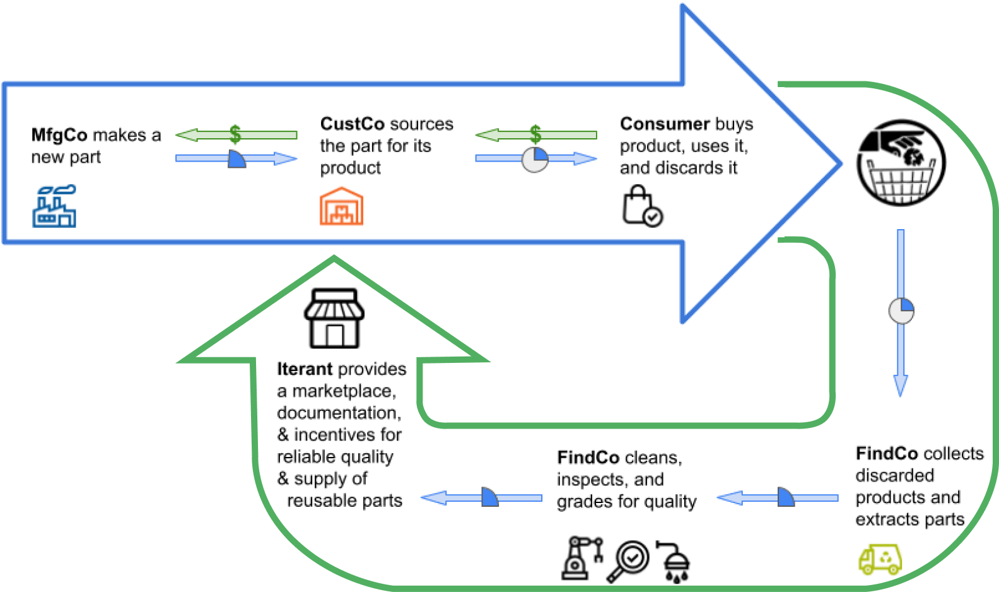
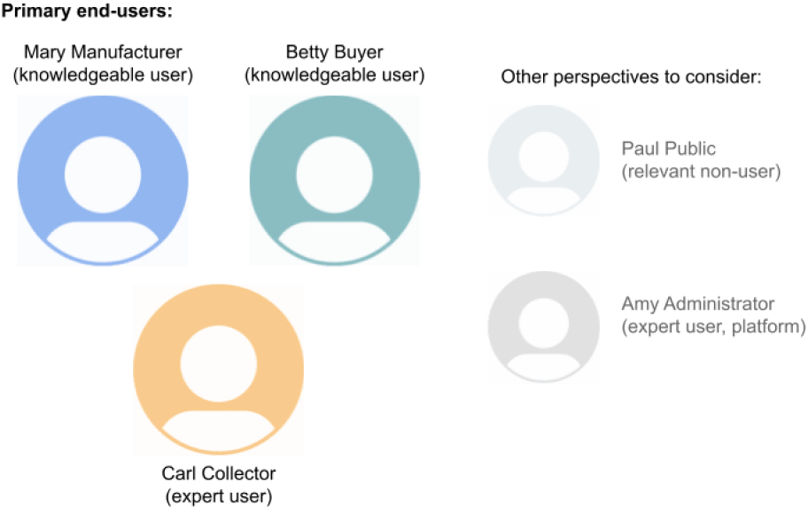
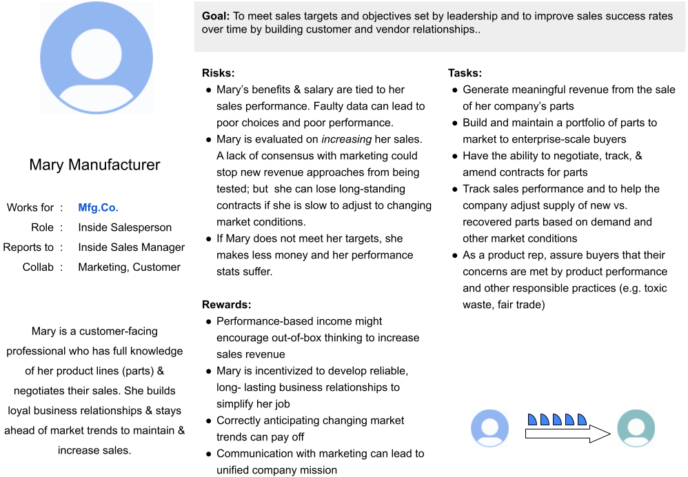
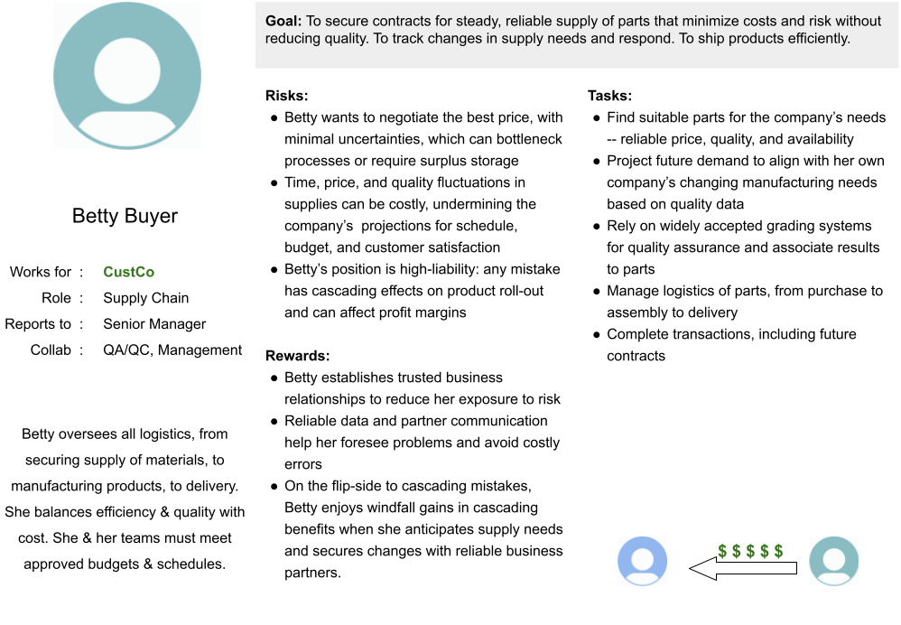
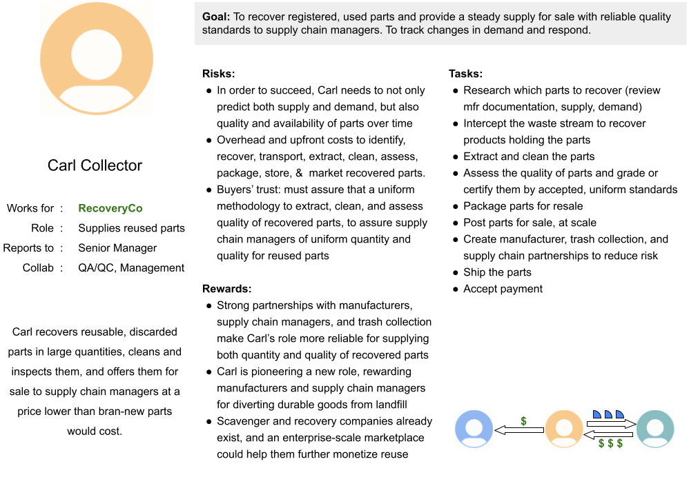
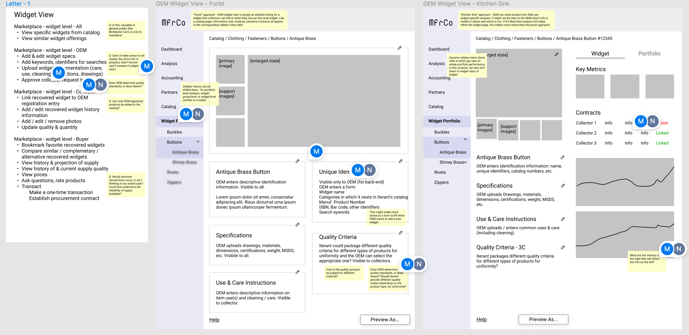
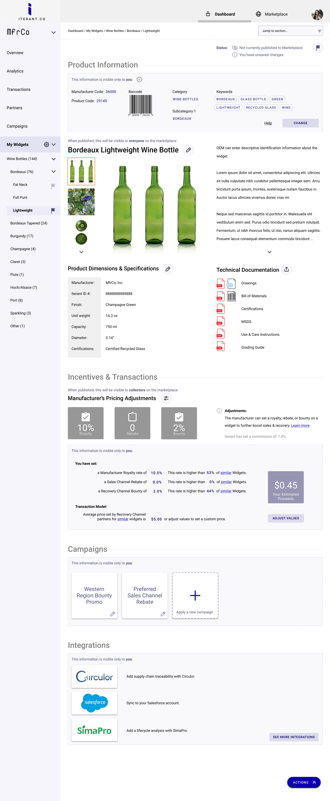
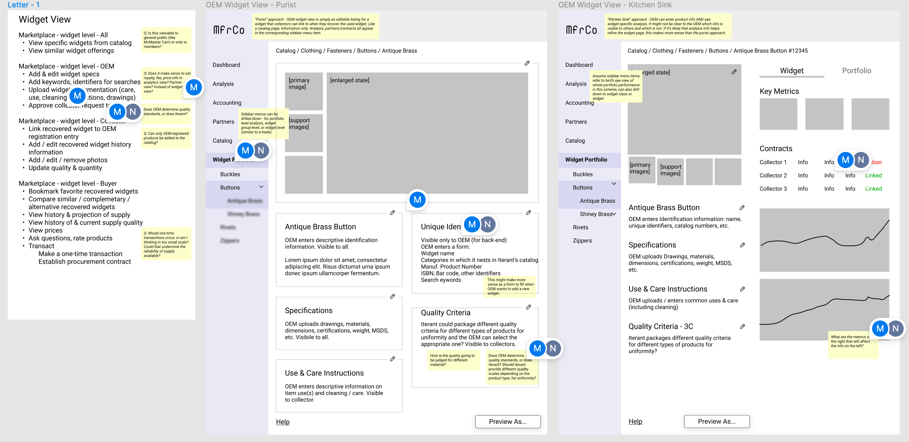
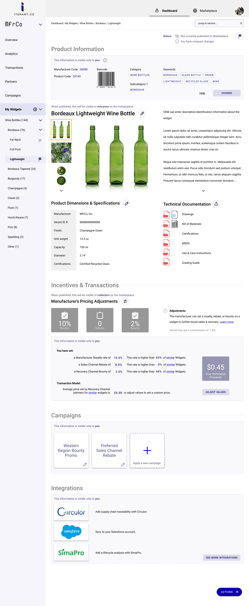

Incentivizing longer life-cycles for durable, reusable goods
Iterant
Responsive Web | Product Design
A cradle-to-grave approach to the use of durable goods is no longer sustainable. A lot of individuals do their part to divert waste from landfills, but at the enterprise scale - that's where meaningful impact can occur. I worked with the founder to strategize on how manufacturing, supply chain, and recovery channels can converge in an online marketplace for the trade and re-trade of products of consistent quality and supply.
Part of a UX designer's role is to learn about the business concept and its stakeholders' goals. In this case, the concept was still being shaped. I was able to serve as a sounding board for the founder's ideas, and take part in strategy discussions with him and his technology advisor.

Manufacturers for durable goods are currently incentivized to make products that are disposed of after first use.
Iterant introduces a circular marketplace that incentivezes manufacturers and supply chain managers to reuse, and creates a "recovery channel".
    


